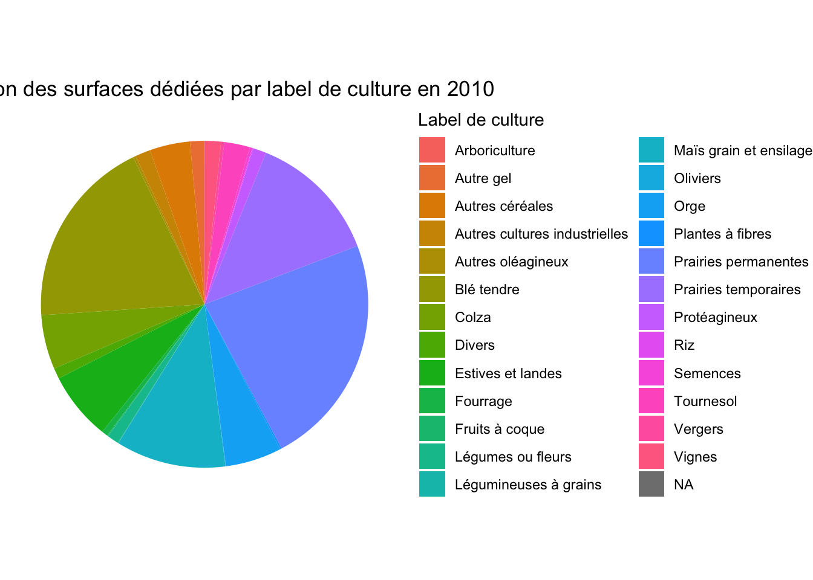
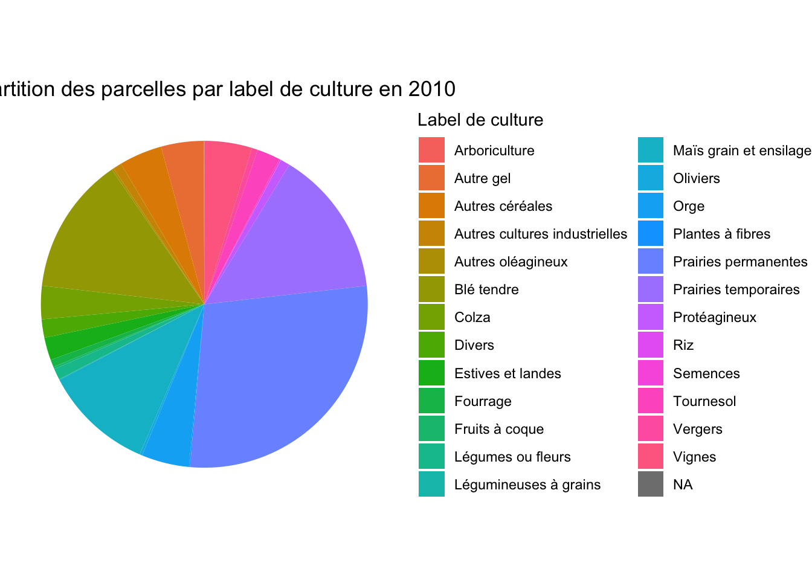
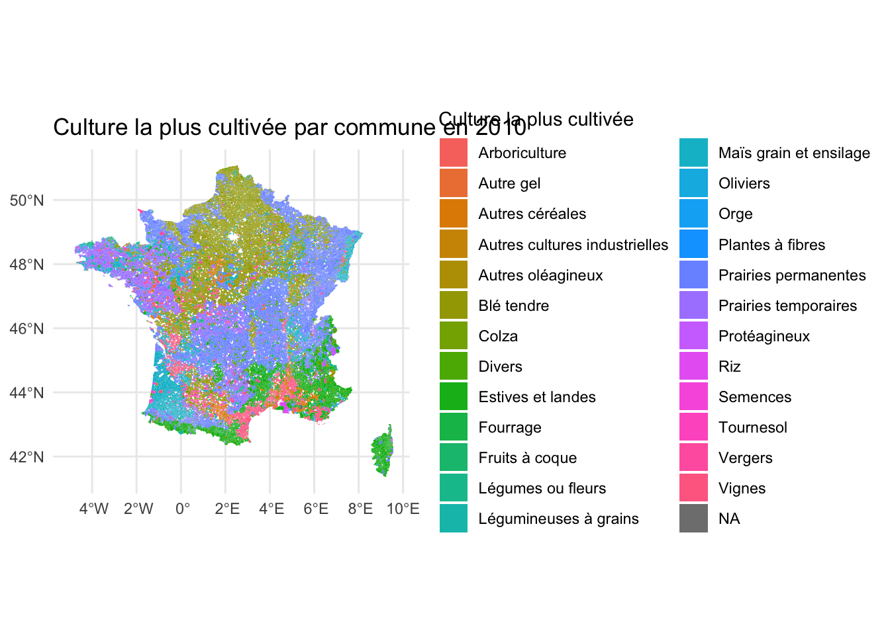
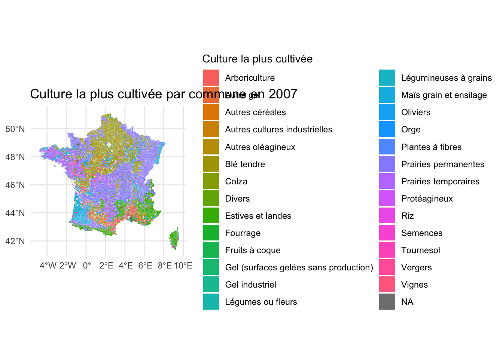
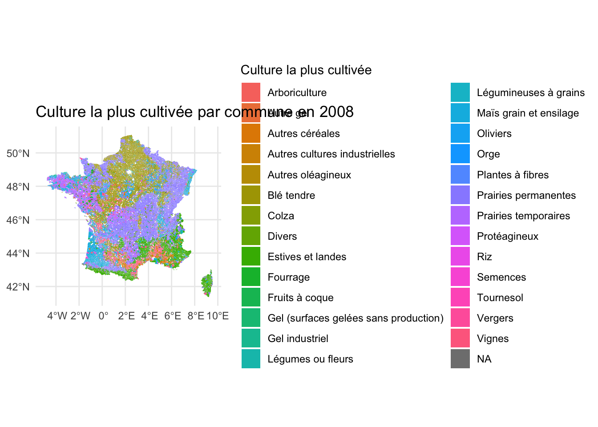
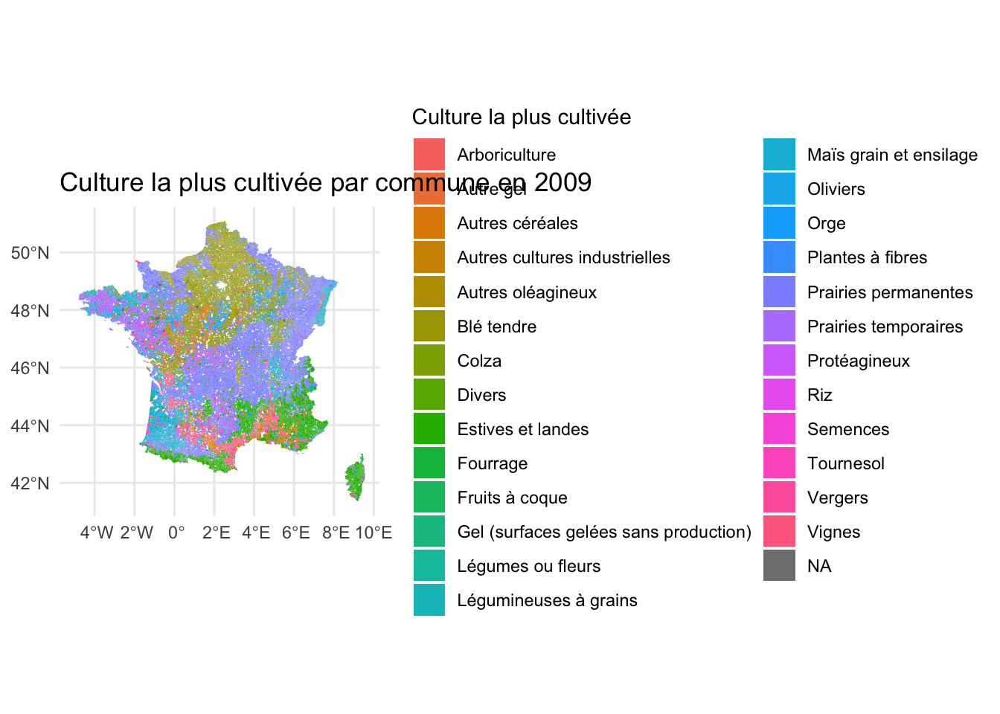
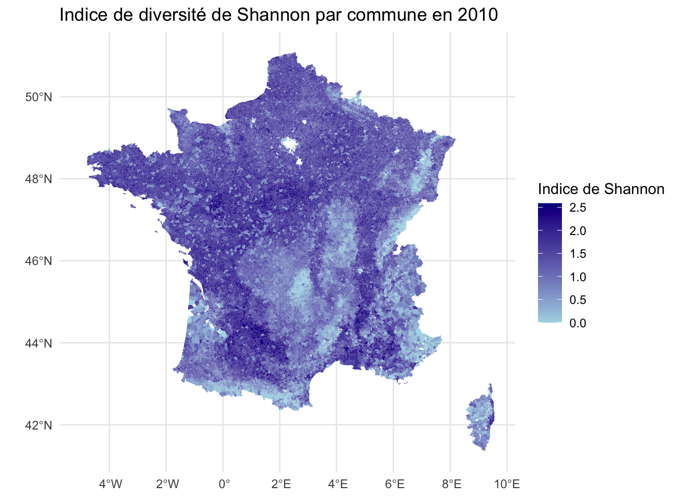
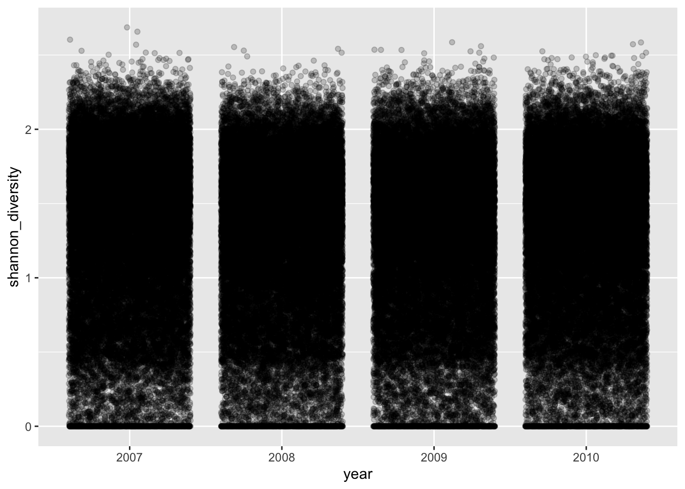

df_2010 <- RPG_20072010_df %>% filter(year == 2010)
aggregated_data <- df_2010 %>%
group_by(cult_label) %>%
summarise(
surf_cult_m2 = sum(surf_cult_m2, na.rm = TRUE),
parcel_cult_n = sum(parcel_cult_n, na.rm = TRUE)
)
total_surf_agri <- sum(df_2010$surf_agri_geo_unit_m2, na.rm = TRUE)
total_parcels <- sum(df_2010$N_Parcels, na.rm = TRUE)
aggregated_data <- aggregated_data %>%
mutate(
surf_cult_perc = (surf_cult_m2 / total_surf_agri) * 100,
parcel_cult_perc = (parcel_cult_n / total_parcels) * 100
)
Tableau_analyse_decriptive1 <- aggregated_data %>%
dplyr::select(
`Label de culture` = cult_label,
`Surface totale dédiée (m2)` = surf_cult_m2,
`Pourcentage de la surface totale (%)` = surf_cult_perc,
`Nombre total de parcelles` = parcel_cult_n,
`Pourcentage du nombre total de parcelles (%)` = parcel_cult_perc
)
Tableau_analyse_decriptive1$`Pourcentage de la surface totale (%)` <- gsub("\\[.*\\]", "", Tableau_analyse_decriptive1$`Pourcentage de la surface totale (%)`)
Tableau_analyse_decriptive1$`Pourcentage de la surface totale (%)` <- as.numeric(Tableau_analyse_decriptive1$`Pourcentage de la surface totale (%)`)AnalyseF
Introduction
Les données du Recensement parcellaires Graphiques (RPG) sont téléchargeables sur ce site RPG signifie Registre Parcellaire Graphique, un système d’information géographique permettant l’identification des parcelles agricoles et fournissant des informations détaillées sur les cultures et l’occupation de chaque parcelle. La source de ces données provient des déclarations des agriculteurs.
Présentation des données RPG
Notre analyse s’inscrit au sein d’un champ qui exploite également ces données. Paragraphe d’xplication RPG explorer. Pour plus de détails voir le document présent dans RPG_documentation.
Les données brutes présentes sur le site donnent pour chaque année un fichier shp (qui nous intéresse pour notre analyse) où l’on trouve principalement l’identifiant de l’unité géographique, ses coordonnées, et la culture qui y est présente. Afin de pouvoir mieux exploiter ces données et faire les analyses de diversité qui nous intéressent, nous commençons par une partie de “préparation des données” pour créer un tableau avec les variables principales qui nous permettront de faire notre analyse, notamment en agrégeant les données à une échelle qui nous intéresse, ici l’échelle de la commune. # Préparation des données
Les données brutes telles que téléchargées à partir du site sont sous deux formats selon l’année ; avant 2015 l’unité de compte étant l’îlot, qui devient après 2015 des parcelles graphiques. Les noms des bases de données sont aussi donnés par Ilots anonymes avant 2015 et Parcelles graphiques après 2015. Les données brutes de Graphiques parcellaires contiennent les colonnes suivantes : ID parcel : Identifiant de la parcelle, unique pour l’ensemble des données. CODE_CULTU : Code de la culture principale de la parcelle. CODE_GROUP : Code du groupe de la culture principale de la parcelle. CULTURE_D1 : Code de la culture intermédiaire (culture intercalée entre deux récoltes de cultures principales) sur la parcelle. CULTURE_D2 : Code de la deuxième culture intermédiaire (culture intercalée entre deux récoltes de cultures principales). (En fait, dans notre analyse, nous n’utilisons pas les deux dernières variables) SURF_PARC : Superficie de la parcelle en hectares. Concernant Ilots anonymes, les tableaux contiennent les mêmes informations excluant les colonnes CULTURE_D1 et CULTURE_D2 (les noms des colonnes ne sont pas toujours les mêmes mais contiennent, en règle générale, les mêmes informations).
Notre travail de préparation de données consiste à passer de ces données-là au tableau RPG_20072010_df.
Pour y arriver, pour chaque année (et donc pour chaque base de données téléchargée sur le site), nous calculons en m² la surface de chaque parcelle agricole grâce à la fonction st_area. Nous ajoutons le libellé de chaque groupe de culture grâce à un tableau également téléchargé depuis le site qui précise quel libellé correspond à quel code de groupe de culture. Ensuite, l’étape la plus importante est celle des contours qui détermine l’échelle à laquelle nous allons effectuer nos analyses ; ici nous choisissons les communes. On télécharge donc un fichier shp qui nous donne les contours des communes, puis en utilisant la fonction st_join, on “calque” les contours des communes sur les données téléchargées.
Nous procédons à d’autres calculs pour avoir un tableau avec les variables principales qui nous intéressent : cult_label, data_type, region, name, year = first(year), surf_tot_geo_unit_m2, surf_agri_geo_unit_m2, surf_cult_m2, surf_cult_perc.
On aligne ensuite le tableau pour toutes les années et les régions dont on dispose afin d’obtenir un tableau contenant toutes les données nécessaires pour notre analyse.
Finalement, à partir de ce dernier, nous créons RPG20072010 dans lequel nous ajoutons le calcul de la surface agricole totale, le nombre total de parcelles, la surface agricole par culture et le nombre de parcelles par culture et finalement le pourcentage agricole de chaque culture et le pourcentage en parcelles de chaque culture.
C’est à partir de ce dernier tableau que nous essayons de “mesurer” la diversité dans ce document.
Analyse descriptive et exploratoire des données
Analyse des cultures en France pour l’année 2010
Représentation graphique:
Premièrement par pourcengate de la surface
ggplot(Tableau_analyse_decriptive1, aes(x = "", y = `Pourcentage de la surface totale (%)`, fill = `Label de culture`)) +
geom_bar(stat = "identity", width = 1) +
coord_polar(theta = "y") +
labs(title = "Répartition des surfaces dédiées par label de culture en 2010",
y = "Pourcentage de la surface totale (%)",
fill = "Label de culture") +
theme_void() +
theme(plot.title = element_text(hjust = 0.5))
Puis par poourcentage du nombre de parcelles
ggplot(Tableau_analyse_decriptive1, aes(x = "", y = `Pourcentage du nombre total de parcelles (%)`, fill = `Label de culture`)) +
geom_bar(stat = "identity", width = 1) +
coord_polar(theta = "y") +
labs(title = "Répartition des parcelles par label de culture en 2010",
y = "Pourcentage du nombre total de parcelles (%)",
fill = "Label de culture") +
theme_void() +
theme(plot.title = element_text(hjust = 0.5))
Résultats: En termes de pourcentage de surface, les 4 cultures les plus présentes en 2010, par ordre, sont: “Prairies permanentes”, “Blé tendre”, “Prairies temporaires” et “Maïs grain et ensillage”. Et en termes de pourcentage de parcelles, les 4 cultures les plus présentes sont, par ordre, “Prairies permanentes”, “Prairies temporaires”, “Blé tendre” et “Maïs grain et ensillage”. On remarque que les 4 cultures les plus cultivées sont les mêmes en considérant le pourcentage de surface agricole ou le pourcentage de parcelles.
Cartes
#Pour les cartes
#
contours <- st_read(here(dir$communes,"communes-20220101.shp")) %>%
mutate(geo_unit = insee)Reading layer `communes-20220101' from data source
`/Users/HP/Desktop/RPG_Analysis/Raw_Data/Communes_Shp/communes-20220101.shp'
using driver `ESRI Shapefile'
Simple feature collection with 34955 features and 4 fields
Geometry type: MULTIPOLYGON
Dimension: XY
Bounding box: xmin: -61.80976 ymin: -21.38973 xmax: 55.83669 ymax: 51.08899
Geodetic CRS: WGS 84# Add geometry variable
results_df_contours <- inner_join(RPG_20072010_df %>% as.data.frame(),
contours %>% as.data.frame(),
by = "geo_unit")
# Convert df as a sf object
RPG_20072010_sf <- results_df_contours %>%
st_as_sf() %>%
dplyr::select(geo_unit, name, region, year,data_type, surf_tot_geo_unit_m2, surf_agri_geo_unit_m2, N_Parcels,
CODE_GROUP, cult_label, surf_cult_m2, surf_cult_perc, parcel_cult_n, parcel_cult_perc)Analyse par communes et par année
Pour l’année 2010 nous allons essayer de représenter sur une carte, par département, la culture la plus cultivée.
# Nettoyer la colonne surf_cult_perc
RPG_20072010_sf$surf_cult_perc <- as.numeric(str_extract(RPG_20072010_sf$surf_cult_perc, "[0-9\\.]+"))
# Filtrer les données pour l'année 2010
df_2010 <- RPG_20072010_sf %>% filter(year == 2010)
# Trouver la culture la plus cultivée pour chaque commune
most_cultivated_per_commune <- df_2010 %>%
group_by(name) %>%
filter(surf_cult_perc == max(surf_cult_perc, na.rm = TRUE)) %>%
ungroup()%>%
transmute(
Commune = name,
Culture_la_plus_cultivée = cult_label
)
print(most_cultivated_per_commune)Simple feature collection with 32269 features and 2 fields
Geometry type: MULTIPOLYGON
Dimension: XY
Bounding box: xmin: -5.025808 ymin: 41.33319 xmax: 9.560053 ymax: 51.08899
Geodetic CRS: WGS 84
# A tibble: 32,269 × 3
Commune Culture_la_plus_cultivée geometry
* <chr> <chr> <MULTIPOLYGON [°]>
1 Achères-la-Forêt Colza (((2.541152 48.32594, 2.…
2 Amillis Blé tendre (((3.106588 48.71325, 3.…
3 Amponville Blé tendre (((2.502611 48.28749, 2.…
4 Andrezel Blé tendre (((2.765703 48.60594, 2.…
5 Annet-sur-Marne Blé tendre (((2.671102 48.92317, 2.…
6 Arbonne-la-Forêt Blé tendre (((2.517012 48.42777, 2.…
7 Argentières Orge (((2.848627 48.65524, 2.…
8 Armentières-en-Brie Protéagineux (((2.979173 48.98047, 2.…
9 Arville Blé tendre (((2.519992 48.19434, 2.…
10 Aubepierre-Ozouer-le-Repos Blé tendre (((2.837951 48.61225, 2.…
# ℹ 32,259 more rowsSur une map les résultats sont visibles:
ggplot(data = most_cultivated_per_commune) +
geom_sf(aes(fill = Culture_la_plus_cultivée), color = NA) + # Pas de contour visible
labs(title = "Culture la plus cultivée par commune en 2010",
fill = "Culture la plus cultivée") +
theme_minimal() +
theme(legend.position = "right")
Pour 2007
df_2007 <- RPG_20072010_sf %>% filter(year == 2007)
most_cultivated_per_commune_2007 <- df_2007 %>%
group_by(name) %>%
filter(surf_cult_perc == max(surf_cult_perc, na.rm = TRUE)) %>%
ungroup()%>%
transmute(
Commune = name,
Culture_la_plus_cultivée = cult_label
)
print(most_cultivated_per_commune_2007)Simple feature collection with 32277 features and 2 fields
Geometry type: MULTIPOLYGON
Dimension: XY
Bounding box: xmin: -5.025808 ymin: 41.33319 xmax: 9.560053 ymax: 51.08899
Geodetic CRS: WGS 84
# A tibble: 32,277 × 3
Commune Culture_la_plus_cultivée geometry
* <chr> <chr> <MULTIPOLYGON [°]>
1 Achères-la-Forêt Blé tendre (((2.541152 48.32594, 2.…
2 Amillis Blé tendre (((3.106588 48.71325, 3.…
3 Amponville Blé tendre (((2.502611 48.28749, 2.…
4 Andrezel Blé tendre (((2.765703 48.60594, 2.…
5 Annet-sur-Marne Blé tendre (((2.671102 48.92317, 2.…
6 Arbonne-la-Forêt Blé tendre (((2.517012 48.42777, 2.…
7 Argentières Blé tendre (((2.848627 48.65524, 2.…
8 Armentières-en-Brie Orge (((2.979173 48.98047, 2.…
9 Arville Blé tendre (((2.519992 48.19434, 2.…
10 Aubepierre-Ozouer-le-Repos Blé tendre (((2.837951 48.61225, 2.…
# ℹ 32,267 more rowsggplot(data = most_cultivated_per_commune_2007) +
geom_sf(aes(fill = Culture_la_plus_cultivée), color = NA) + # Pas de contour visible
labs(title = "Culture la plus cultivée par commune en 2007",
fill = "Culture la plus cultivée") +
theme_minimal() +
theme(legend.position = "right")
Pour 2008
df_2008 <- RPG_20072010_sf %>% filter(year == 2008)
most_cultivated_per_commune_2008 <- df_2008 %>%
group_by(name) %>%
filter(surf_cult_perc == max(surf_cult_perc, na.rm = TRUE)) %>%
ungroup()%>%
transmute(
Commune = name,
Culture_la_plus_cultivée = cult_label
)
print(most_cultivated_per_commune_2008)Simple feature collection with 32273 features and 2 fields
Geometry type: MULTIPOLYGON
Dimension: XY
Bounding box: xmin: -5.025808 ymin: 41.33319 xmax: 9.560053 ymax: 51.08899
Geodetic CRS: WGS 84
# A tibble: 32,273 × 3
Commune Culture_la_plus_cultivée geometry
* <chr> <chr> <MULTIPOLYGON [°]>
1 Achères-la-Forêt Blé tendre (((2.541152 48.32594, 2.…
2 Amillis Blé tendre (((3.106588 48.71325, 3.…
3 Amponville Blé tendre (((2.502611 48.28749, 2.…
4 Andrezel Autres cultures industr… (((2.765703 48.60594, 2.…
5 Annet-sur-Marne Blé tendre (((2.671102 48.92317, 2.…
6 Arbonne-la-Forêt Blé tendre (((2.517012 48.42777, 2.…
7 Argentières Colza (((2.848627 48.65524, 2.…
8 Armentières-en-Brie Orge (((2.979173 48.98047, 2.…
9 Arville Orge (((2.519992 48.19434, 2.…
10 Aubepierre-Ozouer-le-Repos Blé tendre (((2.837951 48.61225, 2.…
# ℹ 32,263 more rowsggplot(data = most_cultivated_per_commune_2008) +
geom_sf(aes(fill = Culture_la_plus_cultivée), color = NA) + # Pas de contour visible
labs(title = "Culture la plus cultivée par commune en 2008",
fill = "Culture la plus cultivée") +
theme_minimal() +
theme(legend.position = "right")
Pour 2009
df_2009 <- RPG_20072010_sf %>% filter(year == 2009)
most_cultivated_per_commune_2009 <- df_2009 %>%
group_by(name) %>%
filter(surf_cult_perc == max(surf_cult_perc, na.rm = TRUE)) %>%
ungroup()%>%
transmute(
Commune = name,
Culture_la_plus_cultivée = cult_label
)
print(most_cultivated_per_commune_2009)Simple feature collection with 32277 features and 2 fields
Geometry type: MULTIPOLYGON
Dimension: XY
Bounding box: xmin: -5.025808 ymin: 41.33319 xmax: 9.560053 ymax: 51.08899
Geodetic CRS: WGS 84
# A tibble: 32,277 × 3
Commune Culture_la_plus_cultivée geometry
* <chr> <chr> <MULTIPOLYGON [°]>
1 Achères-la-Forêt Orge (((2.541152 48.32594, 2.…
2 Amillis Blé tendre (((3.106588 48.71325, 3.…
3 Amponville Blé tendre (((2.502611 48.28749, 2.…
4 Andrezel Blé tendre (((2.765703 48.60594, 2.…
5 Annet-sur-Marne Blé tendre (((2.671102 48.92317, 2.…
6 Arbonne-la-Forêt Blé tendre (((2.517012 48.42777, 2.…
7 Argentières Blé tendre (((2.848627 48.65524, 2.…
8 Armentières-en-Brie Orge (((2.979173 48.98047, 2.…
9 Arville Blé tendre (((2.519992 48.19434, 2.…
10 Aubepierre-Ozouer-le-Repos Blé tendre (((2.837951 48.61225, 2.…
# ℹ 32,267 more rowsggplot(data = most_cultivated_per_commune_2009) +
geom_sf(aes(fill = Culture_la_plus_cultivée), color = NA) + # Pas de contour visible
labs(title = "Culture la plus cultivée par commune en 2009",
fill = "Culture la plus cultivée") +
theme_minimal() +
theme(legend.position = "right")
Indice de diversité:
Indice de Shannon : L’indice prend en compte le nombre d’espèces vivant dans un habitat (richesse) et leur abondance relative . Il est calculé comme l’opposée de la somme du produit de la proportion des individus de la i-ème espèce dans l’ensemble de la communauté et du logarithme naturel de cette proportion.
Indice de Simpson : L’indice de diversité de Simpson est une mesure de la diversité qui prend en compte le nombre d’espèces présentes ainsi que la répartition de leur abondance. À mesure que la richesse en espèces et la répartition de l’abondance augmentent, la diversité augmente également.
L’indice de diversité de Simpson est calculé en prenant la proportion de chaque espèce dans une communauté, en élevant ces proportions au carré, en les additionnant, puis en soustrayant cette somme de 1. Cet indice varie de 0 (faible diversité) à 1 (haute diversité).
RPG_20072010_df$surf_cult_perc <- as.numeric(str_extract(RPG_20072010_df$surf_cult_perc, "[0-9\\.]+"))
diversity_indices <- RPG_20072010_df %>%
group_by(year, geo_unit) %>%
summarize(
shannon_diversity = diversity(surf_cult_perc, index = "shannon"),
simpson_diversity = diversity(surf_cult_perc, index = "simpson")
) %>%
ungroup() %>%
arrange(geo_unit, year)`summarise()` has grouped output by 'year'. You can override using the
`.groups` argument.diversity_indices <- inner_join(diversity_indices %>% as.data.frame(),
contours %>% as.data.frame(),
by = "geo_unit")diversity_indices_2010 <- diversity_indices %>%
filter(year==2010)
diversity_indices_2010 <- st_as_sf(diversity_indices_2010)ggplot(data = diversity_indices_2010) +
geom_sf(aes(fill = shannon_diversity), color = NA) +
scale_fill_gradient(low = "lightblue", high = "darkblue", na.value = "white", name = "Indice de Shannon") +
labs(title = "Indice de diversité de Shannon par commune en 2010") +
theme_minimal() +
theme(legend.position = "right")
ggplot(data = diversity_indices, aes(x = year, y = shannon_diversity, group = geo_unit))+
geom_jitter(alpha = 0.2)